00:00:00
關於明朝的滅亡廣為流傳的有一句話叫「明亡於崇禎，實亡於萬曆，始亡於嘉靖」。說的意思就是明朝的滅亡表面上看起來是滅亡在崇禎手上，實際上是萬曆朝造成的，而這個滅亡的種子是在嘉靖期間種下的。我們今天不聊萬曆和崇禎的事，還是先聊嘉靖。從嘉靖登基到明朝滅亡還有123年的時間，嘉靖後面還有五個皇帝。為什麼把明朝滅亡的種子算在了嘉靖頭上？這個觀點主要是從文官系統的腐敗，以及士大夫風氣的下降來解讀的。
在帝制時代，政治是否清明跟士大夫的風氣有很大關係。因為士大夫相當於是帝國的調節器，他們是能夠運用禮法制衡皇權的唯一力量。士大夫的風氣要是正，皇帝肯聽士大夫的諫言，這個朝代存活的時間就能長久一點。要是士大夫的風氣下降，皇帝聽不進去真話，這個朝代的衰敗就很快。
明朝從建國開始算到嘉靖登基已經過去150多年，一個朝代運行了150多年出現各種問題很正常，比如說邊患問題、土地侵佔問題、水災旱災等等自然災害問題。當這些問題出現的時候，只要文官系統還能夠及時的糾正問題就不至於擴大。但是如果文官系統失靈了，任由問題發展下去，如果這時候文官系統再腐敗了，這個朝代就會加速衰亡、快速滅亡。
明朝的文官系統的腐敗在嘉靖以前，士大夫雖然也有不作為的時候，但是最多是怠惰，並沒有貪腐。比如說在成化朝，成化朝經常被人詬病的「紙糊三閣老」，他們最多是在皇帝有出格行為的時候不勸諫，他們並沒有很嚴重的貪腐行為。他們不勸諫就已經被正統的士大夫們所不齒了，更別說貪腐了。
但是從嘉靖時期開始，士大夫的風氣開始墮落。這種墮落有兩個方面：第一方面是士大夫開始逢迎皇帝而不是勸諫皇帝。明朝從建國開始，士大夫起到的作用就都是勸諫皇帝的角色，他們把勇於勸諫看作自己的使命，看作自己的名節。期間雖然也有很暴力的皇帝，因為士大夫阻止他們嘛，他們就大開殺戒，比如說永樂帝對方孝孺等士大夫就非常殘暴，甚至株連十族。但是即使這樣也沒把士大夫的精神給打壓下去，勇於任事。永樂之後又出現了像于謙、劉健、楊廷和等一代又一代剛正清廉的士大夫。
但是祖宗們沒做到的事情，偏偏嘉靖做到了。嘉靖從精神層面打敗了士大夫，他做到了讓士大夫們失去士的精神，他讓士大夫們以聽話的、阿諛逢迎的姿態出現在他面前。他是怎麼做到的？一會我們詳細說。
士大夫的精神被打壓下去之後，就出現了第二個問題：在嘉靖之前，明朝的文官系統貪腐並不嚴重，當時貪腐嚴重的是宦官。文官並不太貪，文官不貪有兩方面原因，一方面是剛才講的士大夫的氣節，文官還是很重視自己的名聲的，誰要是被發現貪腐了會被同僚所唾棄；還有一方面原因呢，就是在明朝的開國之初，朱元璋整頓吏治的手段非常嚴酷，大家也不敢貪。
從嘉靖朝開始，文官開始墮落，貪腐變成了明面上的事。文官系統不再以貪腐為恥，反而以貪腐為榮。當時有人去外地做官，他要去的這個地方如果是個富裕的地方，親戚朋友就都會恭喜他；他要去的是個窮地方，親戚朋友就會去安慰他。甚至在一個官員上任之前，就有人給他算好了賬，做這個官能撈回來多少錢。你要是撈的少了還會被人嘲笑無能。更有厲害的呀，就是嚴嵩的兒子在賣官的時候已經給你算好了賣給你這個官，你去了之後能賺多少錢，根據你能賺的錢他反推出來我賣給你這個官值多少錢。
所以嘉靖朝是士大夫風氣下降的轉折點，士大夫沒有氣節了，他們自然就起不到帝國調節器的作用了，反而開始加速帝國的衰敗。嘉靖是怎麼做到的讓士大夫喪失氣節，怎麼做到的打斷了士大夫的脊梁骨？下面我們就聊聊嘉靖的「過人之處」，也可以說是他的馭人之術。
首先我們要說一點，就是在嘉靖時期宦官專權的情況並不嚴重，在嘉靖朝並沒有出現過像汪直、劉瑾、魏忠賢這樣的權力巨大的宦官。明朝其實從憲宗開始一直到明朝覆滅都有能夠掌握朝政的大宦官出現，只有嘉靖朝除外。為什麼會這樣？有兩點原因，第一點是跟嘉靖的出身有關，嘉靖他是藩王世子入京當皇帝。
00:05:00
嘉靖十五歲即位時剛進紫禁城，並未在皇宮內長期生長。讓他特別放心的太監第二點在於，他並不需要太監來制衡文官集團。其他皇帝賦予太監權力的主要目的在於制衡文官，但嘉靖卻能自行駕馭文官集團。
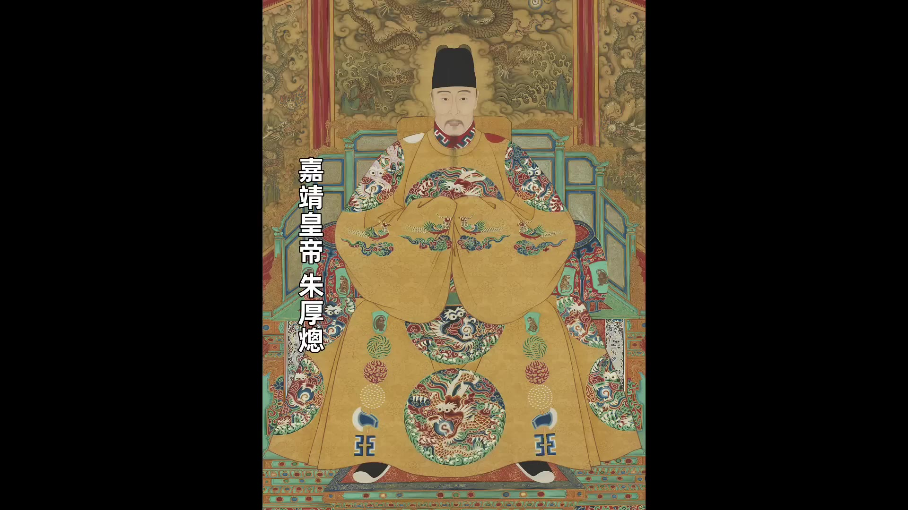
嘉靖控制文官的主要方法可歸納為兩點：樹立典型與分化制衡。首先談樹立典型，他將順從自己的人提拔至高位，而對不順從者則予以淘汰。嘉靖上位後第一件大事即為「大禮議」，此事件持續三年，向士大夫發出「順我者昌，逆我者亡」的明確訊息。支持嘉靖的張璁、桂萼、方獻夫等人皆被破格提拔，分別擔任翰林院學士、禮部尚書及內閣職務；反對者如楊廷和、毛澄、蔣冕等則遭辭職或罷免。
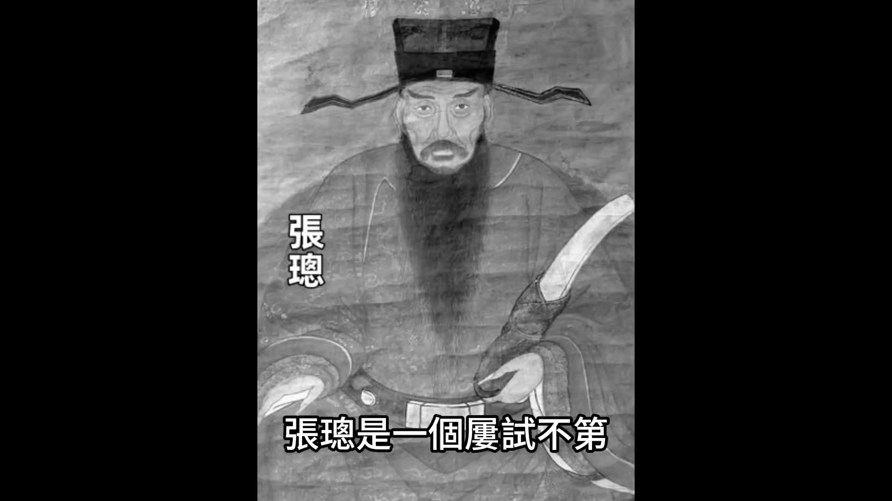
嘉靖跳過吏部正常考核流程，直接晉升支持者。例如張璁47歲才中進士，無政績與資歷，僅因支持議禮即被任命為翰林院學士，後升任禮部尚書與內閣大學士；桂萼在參與議禮前僅為知縣，十年未獲晉升，議禮後卻迅速升至禮部右侍郎、吏部尚書，最終進入內閣。此舉使官員晉升標準從「士大夫精神」轉為「揣摩皇帝心意」，士大夫風氣逐漸被磨滅。
嘉靖對禮教改革的熱衷可分為兩階段：早期勤政階段與後期「懶政」階段（即居於西苑後）。勤政時期雖有內閣發起的政治改革，但嘉靖本人並未主動推動，僅表同意。真正投入精力者為禮教改革，其重點在於修正郊祭儀式、重修孔廟祭典、更正太廟廟制，並編撰《明倫大典》以系統性闡述其思想。此書可視為「嘉靖思想」的集中體現，與傳統皇帝在開疆拓土或政治改革上的作為形成鮮明對比。
嘉靖透過禮法改革將解釋權從士大夫手中轉移，將傳統禮法改為符合自身利益的「嘉靖新思想」，此舉被視為一種「用魔法打敗魔法」的策略——士大夫原本以禮法約束皇帝，嘉靖則反向利用禮法作為思想統治工具。
00:10:00
嘉靖皇帝在統治期間推行一套新思想，透過人事任免制度逐步替換不認同其理念的朝臣。他規定凡支持其思想者可獲升遷，不認同者則被邊緣化。嘉靖退居西苑二十多年間，表面看似修道隱居，實際上仍透過心理戰術操控朝局，使朝臣難以揣測其意圖。此政策導致堅持儒家傳統的士大夫逐漸減少，明代「士的精神」在嘉靖朝遭嚴重磨滅。
嘉靖對官員考核除禮法外，另設青詞考核。青詞為道教齋醮儀式中以朱筆書寫於青藤紙上的祝文，嘉靖重視此類文書。禮部右侍郎顧鼎臣曾為嘉靖撰寫三篇青詞，因文采精湛獲晉升為禮部尚書兼文淵閣大學士，此後文官紛紛效仿，以青詞創作作為晉身之階。嘉靖在西苑設立直廬宜廬，選拔大臣輪值以應對隨時可能的青詞撰寫需求，此待遇成為特殊榮譽。夏言、嚴嵩、徐階等內閣首輔皆曾入駐直廬，被時人諷為「青詞宰相」。
嘉靖透過議禮改革與青詞考核雙重機制篩選朝臣，提拔者皆為順從其意者。此政策使官員選拔脫離政績考核，導致政務處理鬆散。張璁、夏言等人本為接受正統儒家教育的政治家，卻因選擇迎合皇帝興趣而放棄孔孟教誨，士大夫精神逐漸消亡。
嘉靖對朝臣的控制還體現在「欲擒故縱」的用人策略上。其在位四十五年間更替過十多位首輔，其中任期較長者包括楊廷和、張璁、楊一清等人。楊廷和作為前朝老臣，因大禮議事件遭嘉靖借張璁之力扳倒。嘉靖雖讓張璁立下首功，卻未直接任用，反而召回已退隱多年的楊一清。楊一清因聲望高、與朝中官員無瓜葛，且符合嘉靖欲擒故縱的策略，被重新起用。此舉展現嘉靖對朝臣的精準操控手法。
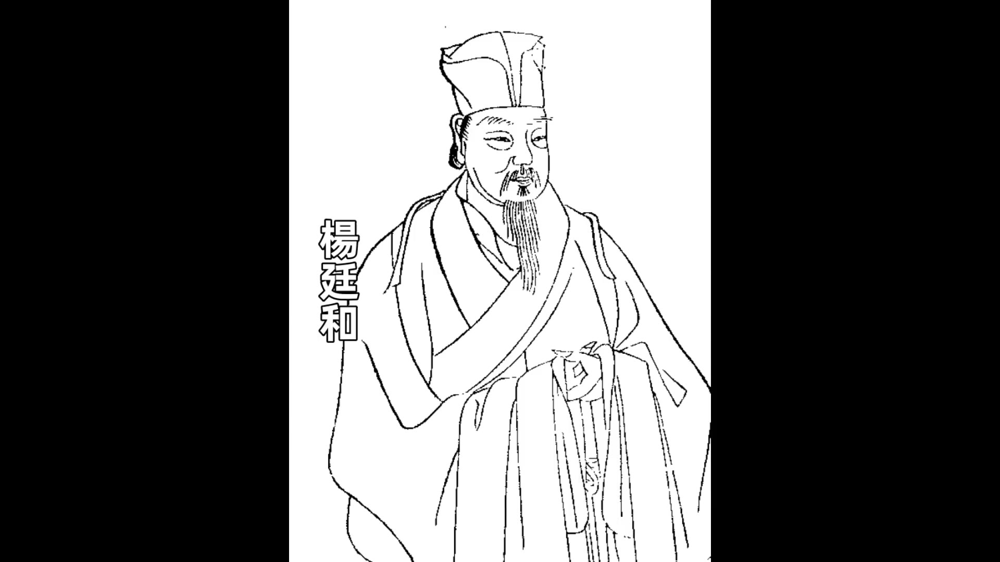
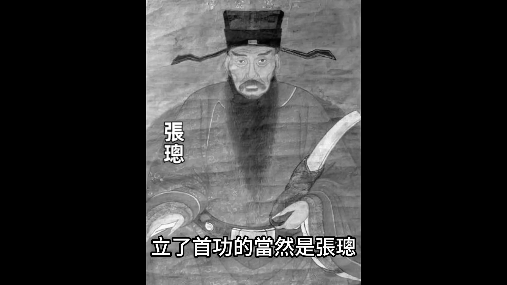
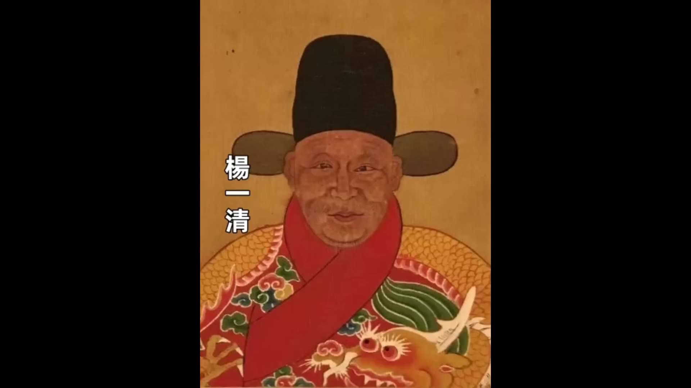
00:15:01
他不想這麼輕易的就起用張璁，他想借助楊一清再打壓張璁一下，把張璁變得更聽話。
_楊一清上任之後，他自以為是領會了皇帝的上意，在一些問題上開始壓制張璁。但張璁仗著皇帝的寵幸，趾高氣昂，根本就不把楊一清放在眼裡。張璁不把楊一清放在眼裡也是有原因的，因為嘉靖經常跟張璁說一些「體己話」，比如說有一次嘉靖就悄悄跟張璁說：「朕有密諭，不要讓別人知道，以免洩密。」嘉靖這麼說就等於是在向張璁傳達一個信息——雖然楊一清是首輔，但是我真正信任的人是你。_
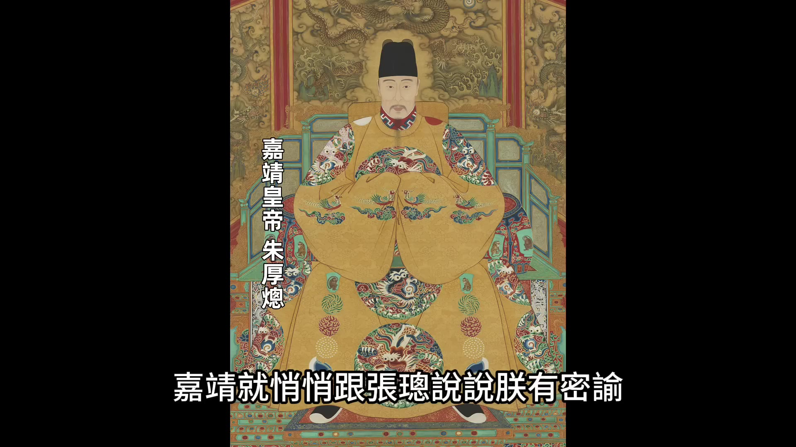
_張璁猜度皇帝的用意，以為皇帝是想用他來換掉楊一清，所以他就開始在公開場合頂撞楊一清，並且還上書彈劾楊一清，說楊一清搞一官堂、說楊一清排擠不同意見。張璁彈劾之後，沒想到嘉靖並沒有幫他，而是和稀泥。嘉靖不阻止張璁彈劾楊一清，但是也不怪罪楊一清，他說的都是一些不痛不癢的話。他的用意很明顯，是鼓勵雙方繼續爭鬥。_
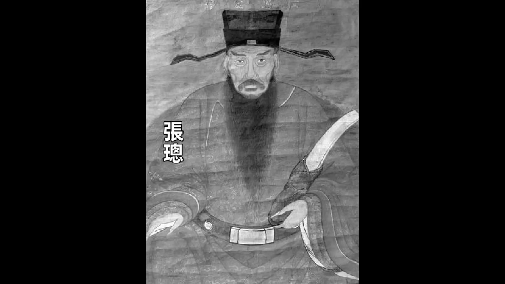
_楊一清果然也上當，楊一清也上書彈劾張璁，說張璁志驕氣橫、頤指氣使。看到楊一清反擊之後，些科道官員跟風行動，也跟著楊一清上書彈劾張璁。其實張璁他本來就沒什麼資歷，他只是靠著議禮上位的，朝廷裡面對他不滿的人大有人在。在眾人的彈劾之下，嘉靖就順水推舟，勒令張璁致仕回家反省。_
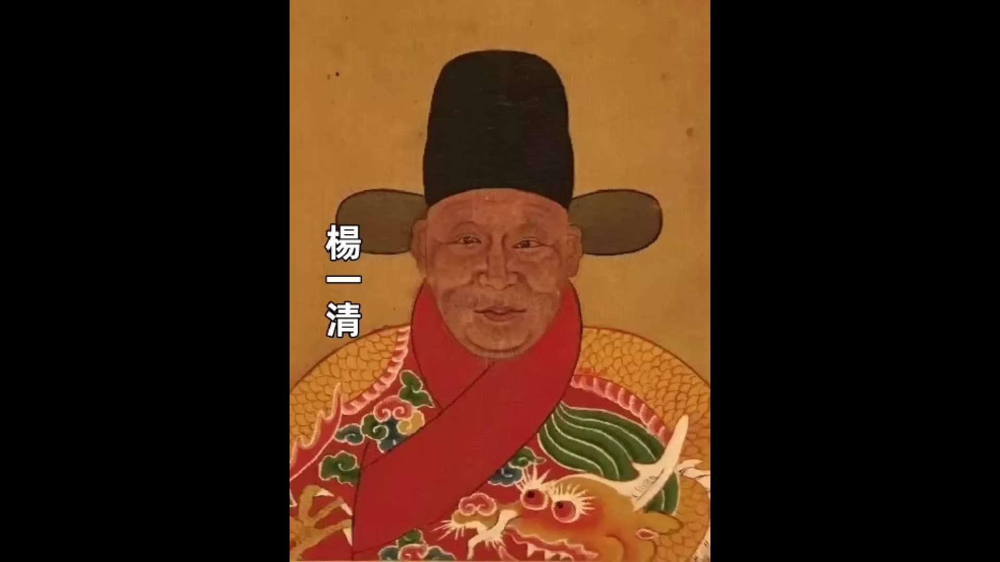
_楊一清剛以為自己赢了，沒想到張璁還沒到老家，嘉靖又下旨讓他回來任職，讓他重新入閣。嘉靖這麼做呀，純粹就是為了挫一下張璁的銳氣，讓他能更聽話，並不是真想放他走。現在嘉靖的目的已經達到了，楊一清的作用也就用完了，沒用多長時間，楊一清就失勢被迫退休。楊一清回老家之後，張璁也沒放過他，導致嘉靖又下旨把楊一清革職。楊一清晚年受辱，不久之後就病發去世了。_
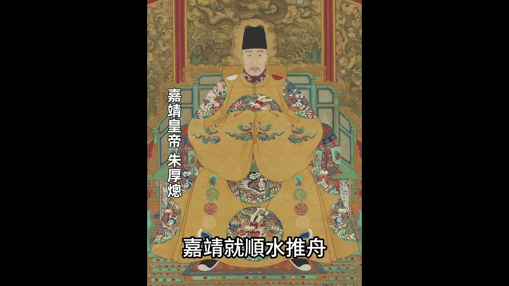
_排擠走楊一清之後，張璁如願以償的當上了首輔，但是他也變成了當初的楊一清。嘉靖很快就給他找了一塊絆腳石，就是夏言。夏言最初只是一個吏科給事中，是一個七品小官。他是抓住嘉靖要改禮法的機會快速晉升的。我們說過，在嘉靖時期，你要想快速晉升，要麼就是支持嘉靖搞禮法改革，要麼就是青詞寫得好。你要是兩樣都做得好，快速晉升的機會就很大。_
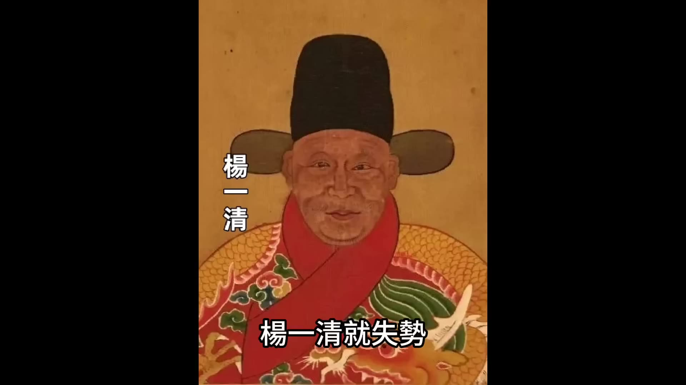
_嘉靖對禮法研究得很深入，當時他認為祭天大禮的流程上有些問題，他要改祭天大禮，他就去徵求張璁的意見。張璁也不知道怎麼了，這次居然沒有順從嘉靖，而是說祭天大禮太重要了，不能隨便改。嘉靖看張璁不支持，他就很不高興，他又去問大學士翟鑾，翟鑾也不支持，他又去問禮部尚書李時，李時也不支持。這幾個人都不支持，嘉靖就很沮喪。_
_這時候剛好夏言上書，夏言請求皇帝更改郊禮儀式，他這個提議剛好對了嘉靖的心思。嘉靖就讓夏言進一步提出建議，夏言抓住機會提出來的建議都是嘉靖願意聽的。結果夏言就變成了一顆冉冉升起的新星，在一年之內他由一個七品的給事中升為侍讀學士，再升為禮部尚書。升遷的路線跟當年的張璁一模一樣（口誤），還要更快升遷的速度比張璁。嘉靖還是老套路，對夏言表現出獨有的寵信，讓夏言感覺自我良好，心甘情願的去挑戰張璁。_
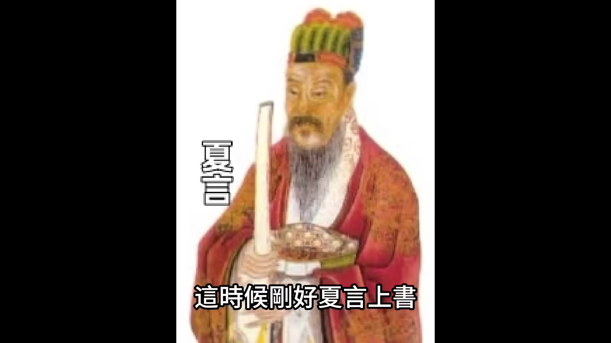
_然後又是重演一遍，這次變成了夏言彈劾張璁，張璁反擊夏言，兩個人打的不亦樂乎。嘉靖在一邊觀戰，最後是張璁退位，夏言晉升。夏言變成了內閣首輔。其實無論是張璁也好，還是夏言也好，他們都犯了一個共同的錯誤，就是對嘉靖的寵信他們是真的相信，他們不知道來自嘉靖的寵信只是嘉靖權術的一部分。嘉靖慣用的方法就是拉一派打一派，在他親手樹立某人威信的同時，他立刻又引入可以牽制他、可以削弱他的力量。過不了多久他就用後者打倒前者，讓後者取而代之。他這樣做的好處是不斷的走馬換將，可以防止一個人執政太久、尾大不掉，又可以宣示自己的權威。_
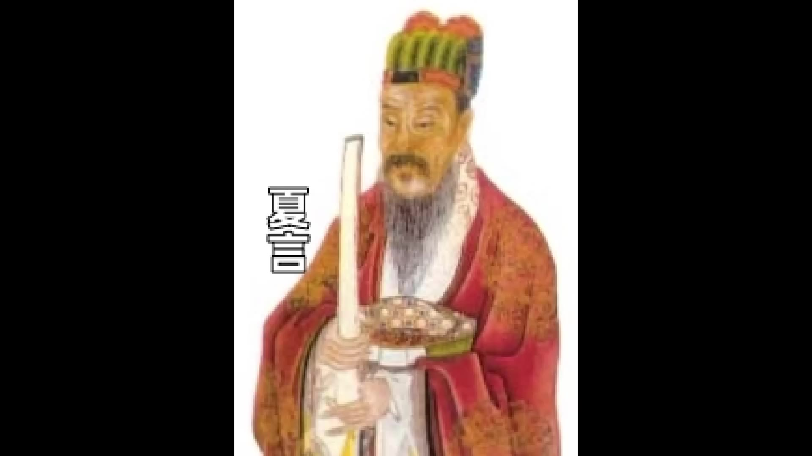
_夏言上位之後，嘉靖又給他找好了新的絆腳石，就是嚴嵩。嚴嵩取代夏言的過程跟夏言取代張璁的過程也差不多，但是嚴嵩上台之後他的表現跟張璁跟夏言都不一樣。張璁和夏言都是勝利了就驕傲得志就忘形，嚴嵩卻非常低調。當了首輔之後，他依然小心謹慎，他可以算是把嘉靖看得比較清楚的人。_
_嚴嵩上台之後，嘉靖當然也給他找對手，但是嚴嵩小心周旋，盡量讓人抓不到把柄。嘉靖給他設的圈套他一概都不鑽，很早就遠遠的躲開。嘉靖退居到西苑之後，_
00:20:01
嘉靖帝對朝中動靜向來保持高度關注，嚴嵩正是他重點監視的對象。根據密探回報，嚴嵩每日工作至深夜，專注為皇帝撰寫青詞。
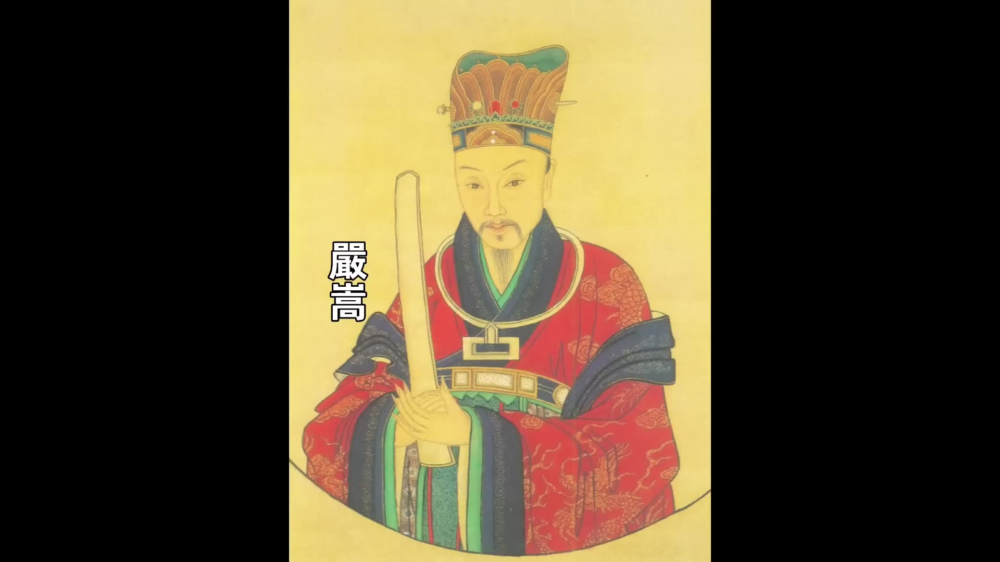
。夏言敗退後，內閣一度只剩嚴嵩一人，這種獨攬大權的局勢本應令他安心，但他卻坐臥不安，主動向嘉靖請示增補閣員。嘉靖讓嚴嵩獨掌內閣一年多，這期間嚴嵩始終謙虛謹慎，未曾顯露倨傲之態，正是憑藉這份謹慎，他才得以執掌內閣近二十年。
觀察首輔更迭可發現，嘉靖帝親手扶植張璁、夏言、嚴嵩，又親手打倒他們。最後一位首輔徐階尚未被處理，嘉靖便已駕崩。這種「扶植-打倒」的循環，實為嘉靖維繫權力的高明手段。
。他刻意拉一派打一派，導致文官集團從內部瓦解，黨爭愈演愈烈，最終成為明朝滅亡的重要因素。嘉靖掌控朝政40多年，其間官員只能迎合其喜好，士大夫節操逐漸被磨滅。士大夫精神本是帝制國家相對正義的唯一保障，而這種保障卻在嘉靖時期逐漸消失。
00:00:00
關於明朝的滅亡廣為流傳的有一句話叫明亡於崇禎實亡於萬曆始亡於嘉靖說的意思就是明朝的滅亡表面上看起來是滅亡在崇禎手上實際上是萬曆朝造成的而這個滅亡的種子是在嘉靖期間種下的我們今天不聊萬曆和崇禎的事還是先聊嘉靖從嘉靖登基到明朝滅亡還有123年的時間嘉靖後面還有五個皇帝為什麼把明朝滅亡的種子算在了嘉靖頭上這個觀點主要是從文官系統的腐敗這個觀點主要是從文官系統的腐敗統的腐敗這個觀點主要是從文自系這<自系統的腐敗這個觀點主要是從文官系統的腐敗是從士大夫風氣的下降來解讀的是從士大夫風氣的下降來解讀的從士正夫風氣的下降來解讀的是從士大夫風氣的下降來解讀的在帝制時代政治是否清明跟士大夫的風氣有很大關係因為士大夫相當於是帝國的調節器他們是能夠運用禮法制衡皇權的唯一力量士大夫的風氣要是正皇帝肯聽士大夫的諫言這個朝代存活的時間就能長久一點要是士大夫的風氣下降皇帝聽不進去真話這個朝代的衰敗就很快明朝從建國開始算到嘉靖登基已經過去150多年了個朝代運行了150多年出現各種問題很正常比如說邊患問題比如說土地侵佔問題比如說水災旱災等等自然災害問題幽現這些問題的時候只要文官系統還能夠及時的糾正問題就不至於擴大但是如果文官系統失靈了
任由問題發展下去如果這時候文官系統再腐敗了這個朝代就會加速衰亡快速滅亡明朝的文官系統的腐敗在嘉靖以前士大夫雖然也有不作為的時候但是最多但是最多是怠惰並沒有貪腐比如說在成化朝成化朝經常被人詬病的紙糊三閣老他們最多是在皇帝有出格行為的時候不勸諫他們並沒有很嚴重的貪腐行為他們不勸諫就已經被正統的士大夫們所不齒了更別說貪腐了但是從嘉靖時期開始士大夫的風氣開始墮落這種墮落有兩個方面第一方面是士大夫開始逢迎皇帝而不是勸諫皇帝明朝從建國開始主大夫起到的作用就都是勸諫皇帝的角色他們把勇於勸諫看作自己的使命看作自己的名節期間雖然也有很暴力的皇帝因為士大夫阻止他們嘛他們就大開殺戒比如說永樂帝永樂帝對方孝孺等士大夫就非常殘暴甚至株連十族但是即使這樣也沒把士大夫的精神給打壓下去勇於任事永樂之後又出現了像于謙像劉健像楊廷和等一代叉一代剛正清廉的士大夫但是祖宗們沒做到的事情偏偏嘉靖做到了嘉靖從精神層面打敗了士大夫他做到了讓士大夫們失去士的精神他讓士大夫們以聽話的以阿諛逢迎的姿態出現在他面前他是怎麼做到的一會我們詳細說士大夫的精神被打壓下去之後就出現了第二個問題在嘉靖之前明朝的文官系統貪腐並不嚴重當時貪腐嚴重的是宦官
文官並不太貪文官不貪有兩方面原因一方面是剛才講的士大夫的氣節文官還是很重視自己的名聲的誰要是被發現貪腐了會被同僚所唾棄還有一方面原因呢就是在明朝的開國之初朱元璋整頓吏治的手段非常嚴酷大家也不敢貪從嘉靖朝開始文官開始墮落貪腐變成了明面上的事文官系統不再以貪腐為恥反而以貪腐為榮當時有人去外地做官他要去的這個地方呢如果是個富裕的地方親戚朋友就都會恭喜他他要去的是個窮地方親戚朋友就會去安慰他甚至在一個官員上任之前就有人給他算好了賬做這個官能撈回來多少錢你要是撈的少了還會被人嘲笑無能更有厲害的呀就是嚴嵩的兒子在賣官的時候已經給你算好了賣給你這個官你去了之後能賺多少錢根據你能賺的錢他反推出來我賣給你這個官值多少錢所以嘉靖朝是士大夫風氣下降的轉折點士大夫沒有氣節了他們自然就起不到帝國調節器的作用了反而開始加速帝國的衰敗嘉靖是怎麼做到的讓士大夫喪失氣節怎麼做到的打斷了士大夫的脊梁骨下面我們就聊聊嘉靖的『過人之處」也可以說是他的馭人之術
首先我們要說一點就是在嘉靖時期宦官專權的情況並不嚴重在嘉靖朝並沒有出現過像汪直劉瑾、魏忠賢這樣的權力巨大的宦官明朝其實從憲宗開始一直到明朝覆滅都有能夠掌握朝政的大宦官出現只有嘉靖朝除外為什麼會這樣有兩點原因第一點是跟嘉靖的出身有關嘉靖他是藩王世子入京當皇帝
00:05:00
他15歲當皇帝的時候剛進紫禁城他並沒有在皇宮裡面長期生長的經歷
讓他特別放心的太監第二點呀他是也不需要太監來制衡文官集團其他的皇帝給太監權力最主要的目的是用太監來制衡文官集團
嘉靖不需要嘉靖他自己就可以很好的駕馭文官不需要太監來制衡文官嘉靖是怎麼控制文官的他的馭人之術是怎麼做到的我們總結出來最主要的有兩點第一個是樹立典型第二個是分化制衡我們先說第一點樹立典型樹立典型是他把順從他的人提拔上來不順從的淘汰處理嘉靖上合做的第一件大事就是大禮議這個上期節目我們說過他通過自己持續的三年的大禮議向士大夫們發出一個信息就是順我者昌逆我者亡在大禮議裡面幾個支持他的幹將像張璁、桂萼、方獻夫他們都被破格提拔給予高位反對他的人像楊廷和、毛澄、蔣冕等等都是該辭職的辭職該罷免的罷兔嘉靖這麼做在流程E跳過了官員選拔的常規考核正常的官員考核吏部有嚴格的考核流程高級官員的選拔還需要廷推嘉靖完全打翻了這一點順從我的就可以越過這些流程直接晉升從出身和履歷來看張璁是一個屢試不第
47歲才考中進士的官場新人他沒有任何政績也沒有任何資歷僅憑著支持嘉靖議禮就可以出任翰林院學士再任職禮部尚書再進入內閣桂萼在參與議禮之前他也是官職低微他是正德六年中的進士中進士之後幹了10年的知縣直沒有得到晉升也是在參與議禮之後他火速躍升短短幾年時間就升為禮部右侍郎然後又升為吏部尚書最後也進入內閣張璁和桂萼的經歷給了廣大官員一個榜樣就是不需要看政績也不需要看資歷只需要揣摩好皇帝的心意滿足皇帝的心理就可以找到升遷的捷徑所以很多官員尤其是級別不高的官員就開始動了這方面心思去揣摩嘉靖的心意去逢迎嘉靖這也正是嘉靖想要達到的效果他這樣做的結果就是規規矩矩做事的得不到晉升逢迎嘉靖心意的反而能夠快速晉升官員選拔的標準不再是你有沒有士大夫精神而是有沒有揣摩好皇帝的心意有沒有滿足皇帝的心願這樣士大夫的精神慢慢就被磨滅了原來的主的精神變成了對嘉靖的逢迎嘉靖的愛好和關注主要是在兩個方面一個是議禮個是議禮一個是議禮一個是修道是修道一個是修道所以在嘉靖身邊要想快速晉升要麼就是在議禮上面支持他的要麼就是寫青詞寫得好的這兩方面我們分開說先說議禮
在大禮議事件之後嘉靖對禮教改革變得非常熱衷最開始他挑起大禮議只是為了給他父親正名也是為了給自己鏟除政敵但是隨著議禮的深入他發現原有的儒家禮法有很多不合理的部分他要改正他要把這些不合理的禮法全部都改掉也就是說他要去做禮教改革做禮教改革按照現在的話來說創造新的思想理論這是嘉靖把他全部注意力都放在的一個地方嘉靖的皇帝生涯其實可以分成兩個階段一個是他早期的一個是他後期的住到階段西苑以後的「懶政j他在勤政階段有一段時間的政治高峰期這段我們上期講過這段時期朝廷有一系列的改革包括政治改革但是這些改革都是內閣發起的嘉靖只是同意而已並不是他主動發起的他也沒花太大精力由嘉靖主動發起的跟朝臣討論最多的幾乎全部都是禮教改革方面在大禮議之後他先是更正了「郊祭儀式」「郊祭儀式」之後他要重修「孔廟祭典」重修「孔廟祭典」之後他又更正了「太廟廟制」他今天主持這個儀式睍天討論那個禮數津津樂道不厭其煩嘉靖甚至還出了一本書把他對禮法改革的成果全部都寫在裡面這本《明倫大典》一可以說是『嘉靖思想」的集中闡述古代所有有作為的皇帝一般都是在開疆拓土方面或者在政治改革方面有所建樹從來還沒有過哪個皇帝願意在思想理論上花這麼大精力要我們說嘉靖還是太超前了
他居然知道利用統一思想這個最高級的武器他這簡直就是用魔法打敗魔法從來都是士大夫用禮法來約束皇帝皇帝最怕的就是禮法禮法的解釋權從來都掌握在士大夫手裡到嘉靖這正好反過來了嘉靖從士大夫最擅長的禮法下手他把傳統的禮法改成了符合他利益的嘉靖新思想
00:10:00
然後他再去統一宣傳這套嘉靖的新思想凡是不認同他思想的都得不到升職凡是認同他思想的都可以身居高位慢慢的他就把不同意他思想的朝臣都給換掉了留下來的都是認同他思想的所以嘉靖後期他退居到西苑他退到西苑二十多年一直都沒有失去對局面的控制他退到西苑之後表面文官看起來是過上了修道的隱居生活實際上他也是一種心理戰都逃不過他的耳目朝臣完全猜不透皇帝在想什麼反而更加小心翼翼嘉靖新思想的風氣形成之後那些堅持儒家傳統思想的生大夫自然就變少了堅持傳統儒家的士大夫要麼就變節了要麼就被邊緣化了明代『士的精神」就是這麼被磨滅的朱元璋的酷刑朱棣的殺戮都沒有做到的事讓嘉靖給做成了嘉靖對官員的考核除了禮法之外還有另外一件事就是寫青詞
青詞是道教教徒舉行齋醮儀式的時候奉獻給天神的祝文這種文章是用朱筆寫在青藤紙上所以叫青詞嘉靖迷信道教他對齋醮儀式也很重視他對青詞的要求就很高最開始青詞是由道士撰寫但是道士的文化水平有限寫出來的青詞缺乏文採嘉靖很不滿意嘉靖在宮中舉行齋醮儀式的時候禮部右侍郎顧鼎臣為了討好嘉靖他就給嘉靖寫了三份青詞這份青詞寫的精彩絕倫嘉靖看了之後特別高興隨後時間不長顧鼎臣就被嘉靖晉升為禮部尚書然後又兼職文淵閣大學士只憑一份青詞就能得到晉升文官們似乎找到了晉升的捷徑他們就開始跟隨顧鼎臣的腳步把自己畢生所學都用來給嘉靖寫青詞這就開啓了文官寫青詞的風氣文官們爭先恐後的寫青詞誰寫的好誰寫的符合嘉靖的心意就能夠成為升遷的主要依據嘉靖後來搬到西苑之後他在西苑專門設了直廬宜廬就是大臣們在西苑值班的宿舍嘉靖欽定幾名大臣就住在直廬以備皇帝一旦要寫青詞他們就可以隨叫隨到對於當時的朝臣來說能夠入駐直廬被視為是種特殊的尊寵和榮耀嘉靖中後期的內閣首輔像夏言、嚴嵩、徐階等人都是入駐過直廬的人這些首輔當時被譏諷為『青詞宰相」嘉靖讓這些大臣寫青詞一方面是他真的迷信道教另外一方面就是他也用寫青詞來篩選朝臣凡是願意為他寫青詞的都是順從他的所以嘉靖主要是通過這
兩種方式來篩選朝臣一個是議禮在禮教改革上支持他的他會提拔上來另外一個是寫青詞願意為他寫青詞的而且寫得好的他會提拔上來這樣嘉靖提拔上來的朝臣肯定都是完全順從他的但是這樣的朝臣都是靠阿諛逢迎投嘉靖所好上位的他們的精力都用來逢迎皇帝都用來絞盡腦汁寫青詞對於政務自然就沒那麼用心既然官員的選拔都已經不看政績了那政務辦的好壞也就沒那麼重要了所以當明朝走下坡路的時候朝臣們並沒有起到一個好的正向的調節器的作用其實張璁、夏言、嚴嵩、徐階這些人他們原本都是接受過正統儒家教育的人有的甚至都是很有能为的政治家但是他們都認准了一條就是對皇帝必須逢迎在孔孟的教誨和皇帝的興趣之間做選擇他們無一例外都選擇了皇帝的興趣他們不再會抱著孔孟的教誨不放所以他們士的精神就被逐漸磨沒了嘉靖對於朝臣的掌控還有一招是讓朝臣時刻都有恐懼的心理即使是他自己扶上位的朝臣他也不會一直任用他經常欲擒故縱我們通過首輔的更替來看看嘉靖的這個手法
嘉靖在位四十五年他在位期間換過十多位首輔其中任職有的時間長有的時間短我們主要說任職時間長的
第一個飪職時間長的首輔是楊廷和楊廷和是前朝留下來的老臣不是嘉靖自己選的嘉靖第一個要對付的就是他在大禮議事件中嘉靖把張璁等人調來京城配合他打倒楊廷和楊廷和被扳倒之後
立了首功的當然是張璁但是嘉靖並沒有直接任用張璁而是把楊一清給請了回來
楊一清是正德年間的老臣他離開政壇已經好多年了嘉靖把他請回來一方面是他聲望很高朝臣不會有意見另外一方面呢也是因為他離開政壇好多年了跟北京的官員沒有太多瓜葛還有一點是嘉靖也是欲擒故縱
00:15:01
他不想這麼輕易的就起用張璁他想借助楊一清再打壓張璁一下把張璁變得更聽話
楊一清上任之後他自以為是領會了皇帝的上意在一些問題上開始壓制張璁但張璁仗著皇帝的寵幸趾高氣昂根本就不把楊一清放在眼裡張璁不把楊一清放在眼裡也是有原因的因為嘉靖經常跟張璁說一些「體已話」比如說有一次嘉靖就悄悄跟張璁說說朕有密諭
不要讓別人知道以免洩密嘉靖這麼說就等於是在向張璁傳達一個信息雖然楊一清是首輔但是我真正信任的人是你
张璁猜度皇帝的用意以為皇帝是想用他來換掉楊一清所以他就開始在公開場合頂撞楊一清並且還上書彈劾楊一清說楊一清搞一官堂說楊一清排擠不同意見張璁彈劾之後沒想到嘉靖並沒有幫他而是和稀泥嘉靖不阻止張璁彈劾楊一清但是也不怪罪楊一清他說的都是一些不痛不癢的話他的用意很明顯是鼓勵雙方繼續爭鬥
楊一清果然也上當楊一清也上書彈劾張璁說張璁志驕氣橫頤指氣使看到楊一清反擊之後些科道官員跟風行動也跟著楊一清上書彈劾張璁其實張璁他本來就沒什麼資歷他只是靠著議禮上位的朝廷裡面對他不滿的人大有人在在眾人的彈劾之下嘉靖就順水推舟
勒令張璁致仕亞回家反省亞楊一清剛以為自己赢了沒想到張璁還沒到老家嘉靖又下旨讓他回來任職讓他重新入閣嘉靖這麼做呀純粹就是為了挫一下張璁的銳氣讓他能更聽話並不是真想放他走現在嘉靖的目的已經達到了楊一清的作用也就用完了沒用多長時間
楊一清就失勢被迫退休楊一清回老家之後張璁也沒放過他導致嘉靖又下旨把楊一清革職楊一清晚年受辱不久之後就病發去世了排擠走楊一清之後張璁如願以償的當上了首輔但是他也變成了當初的楊一清嘉靖很快就給他找了一塊絆腳石就是夏言
夏言最初只是一個吏科給事中是一個七品小官他是抓住嘉靖要改禮法的機會快速晉升的我們說過在嘉靖時期你要想快速晉升要麼就是支持嘉靖搞禮法改革要麼就是青詞寫得好你要是兩樣都做得好快速晉升的機會就很大嘉靖對禮法研究的很深入當時他認為祭天大禮的流程上有些問題他要改祭天大禮他就去徵求張璁的意見張璁也不知道怎麼了這次居然沒有順從嘉靖而是說祭天大禮太重要了不能隨便改嘉靖看張璁不支持他就很不高興他又去問大學士翟鑾翟鑾也不支持他他又去問禮部尚書李時李時也不支持這幾個人都不支持嘉靖就很沮喪
這時候剛好夏言上書夏言請求皇帝更改郊禮儀式他這個提議剛好對了嘉靖的心思嘉靖就讓夏言進一步提出建議夏言抓住機會提出來的建議都是嘉靖願意聽的結果夏言就變成了一顆冉冉升起的新星在一年之內他由一個七品的給事中升為侍讀學士再升為禮部尚書升遷的路線跟當年的張璁一模一樣（口誤）還要更快升遷的速度比張璁然後嘉靖還是老套路對夏言表現出獨有的寵信讓夏言感覺自我良好心甘情願的去挑戰張璁然後又是重演一遍這次變成了夏言彈劾張璁張璁反擊夏言兩個人打的不亦樂乎嘉靖在一邊觀戰最後是張璁退位夏言晉升夏言變成了內閣首輔其實無論是張璁也好還是夏言也好他們都犯了一個共同的錯誤就是對嘉靖的寵信他們是真的相信他們不知道來自嘉靖的寵信只是嘉靖權術的一部分嘉靖慣用的方法就是拉一派打一派在他親手樹立某人威信的同時他立刻又引入可以牽制他可以削弱他的力量過不了多久他就用後者打倒前者讓後者取而代之他這樣做的好處是不斷的走馬換將可以防止一個人執政太久尾大不掉又可以宣示自己的權威
夏盲上位之後嘉靖又給他找好了新的絆腳石就是嚴嵩嚴嵩取代夏言的過程跟夏言取代張璁的過程也差不多但是嚴嵩上台之後他的表現跟張璁跟夏言都不一樣張璁和夏言都是勝利了就驕傲得志就忘形嚴嵩卻非常低調當了首輔之後他依然小心謹慎他可以算是把嘉靖看得比較清楚的人
嚴嵩上台之後嘉靖當然也給他找對手但是嚴嵩小心周旋盡量讓人抓不到把柄嘉靖給他設的圈套他一概都不鑽很早就遠遠的躲開嘉靖退居到西苑之後
00:20:01
他是一直都派人秘密打探朝臣的動靜虛實嚴嵩就是他重點關注的對象而嘉靖得到的情報每次得到的情報都是嚴嵩每天都是工作到深夜特別是他都在精心的為皇帝寫青詞
嚴嵩的戒備可以說是全方位的夏言敗退了之後有一年多的時間內閣只剩下嚴嵩一個人在別人眼裡面內閣只剩一個人這是求之不得的獨攬大權但是嚴嵩卻坐臥不安他主動向嘉靖請示請示要增補閣員不知道嘉靖內心是怎麼想的反正他讓嚴嵩一個人單獨內閣一年多這一年多嚴嵩還是謙虛謹慎絲毫沒有翹尾巴嚴嵩全是靠自己的謹慎才能夠執掌內閣將近二十年
最後還是把他給扳倒了我們看這些首輔的更替嘉靖親手扶植起來張璁然後再親手打倒然後他又親手扶起來夏言再親手打倒之後再親手扶起的嚴嵩再親手打倒最後一個首輔徐階嘉靖還來不及收拾他自己就死了這個遊戲他肯定還會繼續玩下去嘉靖這麼做不是他喜怒無常而是保持對權力控制的高級手法這就是他的馭人之術他的這種馭人之術給明朝後期埋下了一個巨大的雷就是「黨爭」在嘉靖之前明朝的文官集團是一個聲音統一行事文官集團鬥爭的主要對象是宦官集團但是在嘉靖之後他拉一派打一派文官集團就從內部被瓦解文官內部的黨爭不斷越演越烈最後變成了促使明朝滅亡的一個重要因素嘉靖用他自己的馭人之術掌控了朝政40多年在他的掌控之下官員只能投他所好不斷逢迎士大夫的精神士大夫的節操都已經被磨滅殆盡而士大夫的精神又是帝制國家相對正義的唯一的保障不管後人怎麼看待儒家倫理帝制國家的相對正義性確實是靠儒家倫理來維持的這個儒家倫理依託的就是士大夫的精神韭大夫的精神沒有了這個國家僅有的保障也就沒有了
好了今天的故事就講到這裡了我開通了「1921-1945年的專題歷史課程」有興趣的朋友歡迎點擊影片下方鏈接瞭解
已核實
嘉靖八年九月，嘉靖帝召張璁重新入閣，同月楊一清即被罷免 — 明史・本紀・世宗卷十七・嘉靖八年（段905）：「……召張璁復入閣。癸丑，楊一清罷」——確認影片所述「（嘉靖）讓他（張璁）重新入閣」與「導致嘉靖又下旨把楊一清革職」兩件事發生在同一個月（嘉靖八年九月），且順序一致：張璁先被召回，楊一清隨即被罷——與影片描述的政治鬥爭時序完全相符。✅
未能獨立核實
- 楊一清被罷免後「晚年受辱」的具體記載（本次僅核對到「罷」這一結果，未逐一核對其後續遭遇的史料出處）- 嘉靖朝內閣首輔更替的確切人數（影片稱「換過十多位首輔」）- 嘉靖用「馭人之術」掌控朝政「40多年」與嘉靖實際在位45年（1521-1566）之間的對應關係（本次未查證影片「40多年」這一表述的具體所指年段）- 夏言、徐階分別接任內閣首輔的確切日期